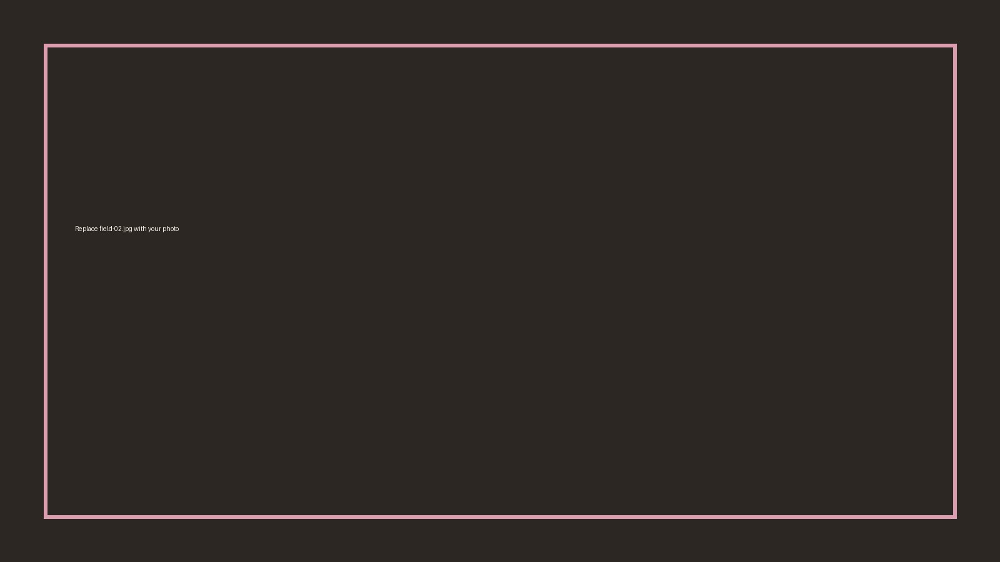
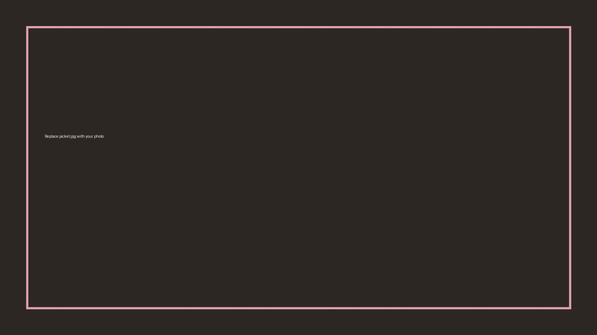
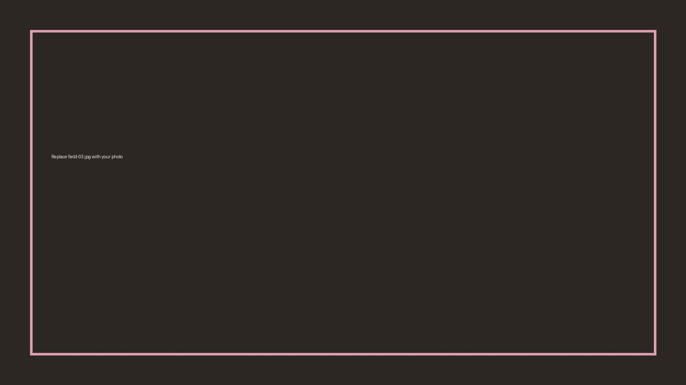
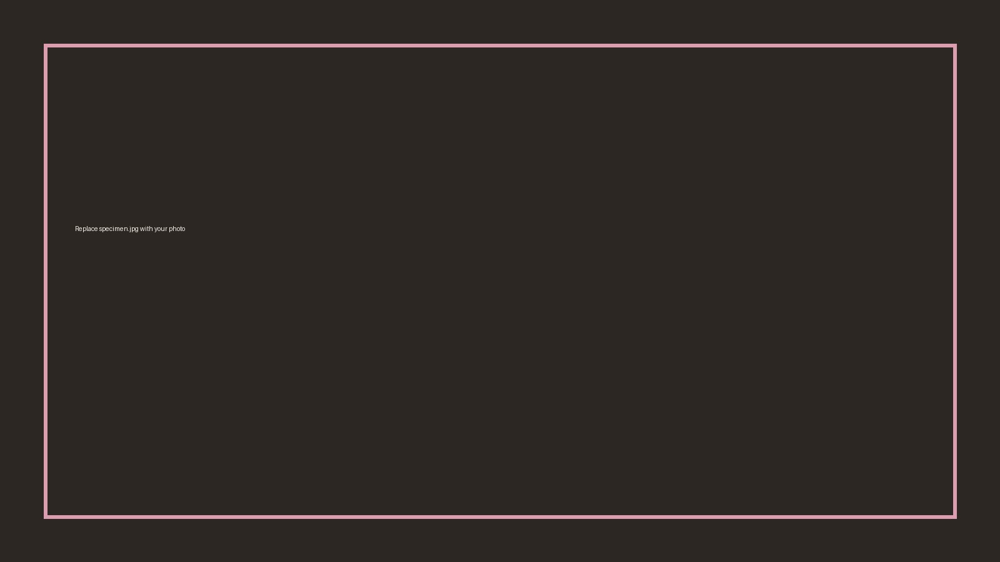
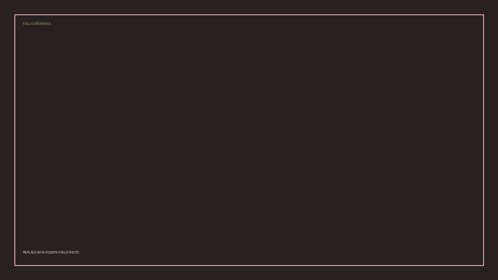

2026 • TEXAS TECH UNIVERSITY
Lubbock Lake Landmark
12-week regional field research program • Museum of Texas Tech University
A hands-on introduction to professional paleontological and archaeological fieldwork, with experience spanning excavation, survey, documentation, laboratory processing, fossil preparation, and public interpretation.
Field & research work
- Conducted Quaternary/Pleistocene paleontological and archaeological fieldwork across multiple localities.
- Excavated and processed vertebrate and microfaunal material, including mammoth, bison, horse, camel, peccary, and turtle remains, alongside archaeological materials.
- Maintained detailed provenience, context, stratigraphic, sediment, specimen, and treatment records.
- Set up and operated Trimble GNSS and total-station equipment to record coordinates and elevations.
Laboratory & preparation
- Processed matrix through washing, drying, sorting, identification, and cataloging.
- Constructed and documented plaster-and-burlap fossil jackets and progressed to independently completing jackets.
- Used PVAC at varying concentrations for specimen stabilization and recorded treatments.
- Assisted with sublevel-by-sublevel laboratory excavation of a large mammoth jacket containing a tooth and tusk.





TEAM & OUTREACH
Growing from learner to trusted crew member.
I trained newer volunteers in surveying equipment, field documentation, excavation procedures, and site practices; assisted with crew operations; and explained field methods and the research program to visitors.
I also documented the season through photography and video, with a longer personal project planned around the experience.